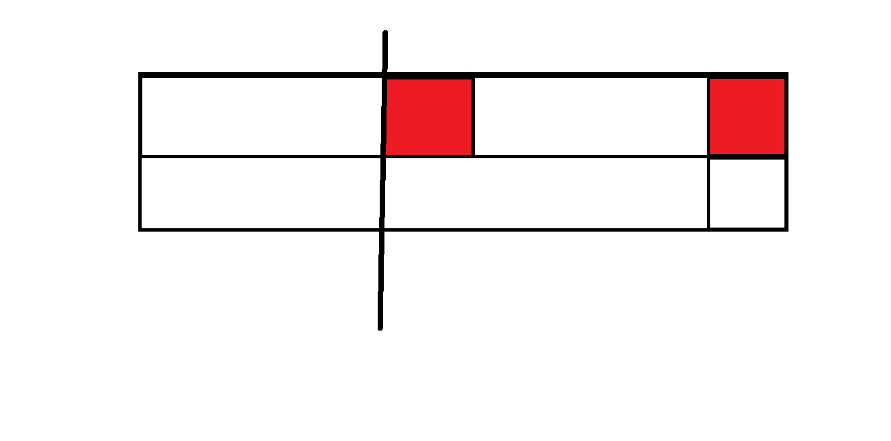

广西/贵州 $OI$ .
题面
与或和
- 显然可以每一位分开做.
- 或就是用总子矩阵数目减去全 $0$ 子矩阵数目.与就是全 $1$ 子矩阵数目.单调栈经典问题.
- 时间复杂度 $O(32n^2)$ .
1 |
|
宝牌一大堆
- 怎么又是 $mahjong$ …是不是可以专门出一类 麻将 $dp$ 啊.
- 七对子和国士无双可以单独做.七对子可以 $dp$ , $g(i,j)$ 表示考虑前 $i$ 种牌,组成 $j$ 个对子的最大得分.国士无双可以大力枚举一下哪张幺九牌有两张.
- 对于普通的 $3\times 4+2$ 的胡牌,把牌搞上标号,使得顺子的标号是连续的.记 $f[i][j][k][l][m][n]$ 表示考虑了前 $i$ 种牌,形成了 $j$ 个面子, $k$ 个雀头, $i-2,i-1,i$ 已经选了 $l,m,n$ 个时,前 $i-3$ 种牌能获得的最大得分.
- 转移时枚举一下 $i$ 这张牌不选/成刻子/成杠子/与 $i-2,i-1$ 成顺子的几种情况即可,注意判断合法性.
1 |
|
特技飞行
- 无论怎样决策,所有交点的位置是确定的.所以 $c$ 的贡献可以和 $a,b$ 分开算.
- 所有合法决策最值,一定是一个使 对向交换 的次数最多,另一个使 对向交换 的次数最少.
- 计算 $a,b$ 的贡献时,交点的具体位置不重要,先只考虑 $y$ 的相对大小.
- 对于最多的情况,我们可以在 每个 交点处都选择 对向交换 .因为每个交点其实就是二元组 $(y_0,y_1)$ 的一个逆序对产生的.那么将每个逆序对的 $y_1$ 都交换,最后就不会有逆序对(交换排序),即满足要求.
- 对于最少的情况,可以发现对于 $y_1$ 中的每个置换,内部需要交换大小 $-1$ 次,各个置换独立,那么总交换次数为 $n-$ 置换数目.找到的证明.
- 再来算 $c$ 的贡献.可以把所有点按 $y_1$ 从大到小依次加入 $set$ 中,以 $y_0$ 为关键字,这样能产生交点的点在 $set$ 中是一个前缀部分,合法就计算交点,不合法时就跳出,加入下一个点.
- 曼哈顿距离不太好搞,经典套路,转化成切比雪夫距离,就变成了问每个交点是否被一些矩形中的至少一个覆盖.
- 把点加入 $kdtree$ 中,每个矩形给其中的点打一打标记就好了.也可以离线后扫描线+树状数组.
1 |
|
逼死强迫症
- 求必须用两块 $1\times 1$ 的方案,转化一下,设 $f_i$ 表示任意用砖,铺满前 $i$ 列的方案数, $g_i$ 表示只用 $1\times 2$ 的砖铺满前 $i$ 列的方案数.那么最后的答案就是 $f_n-g_n$ .
- $g$ 的转移很简单, $g_i=g_{i-1}+g_{i-2},g_0=1,g_1=1$ .
- $f$ 的转移呢?多出来一列时,若不在这一列用 $1\times 1$ 的砖,那么方案数为 $f_{i-1}+f_{i-2}$ .
- 若在这一列用 $1\times 1$ 的砖,那么为了填满前 $i$ 列,另外一块 $1\times 1$ 也必须用,并且只能放在第 $1\sim i-2$ 列.
- 若这两块砖中间还有偶数列,那么它们只能在同一行,否则,只能在不同的一行.看下面的图片感性理解:

- 那么左边那块 $1\times 1$ 的左边只能用 $1\times 2$ 填满,方案数用 $g$ 计算,右边只能有 $1$ 种填法.
- 枚举右边那块 $1\times 1$放在第 $1,2$ 行,左边那块 $1\times 1$ 放在第 $j$ 列.
- 整理一下,就有 $f_i=f_{i-1}+f_{i-2}+2\times \sum_{j=1}^{i-2} g_{j-1}$ .
- 边界有 $f_1=1,f_2=2$ .把 $g$ 的前缀和, $g,f$ 一起用矩阵快速幂优化转移即可.
1 |
|
旅行者
- 考虑将所有 感兴趣的城市 划分到两个集合 $A,B$ 中,从 $S$ 向 $A$ 中每个点连 $0$ 边,从 $B$ 中每个点向 $T$ 中连 $0$ 边.
- 这样从 $S$ 到 $T$ 的最短路长度就是 $A$ 与 $B$ 中两两最短路的最小值.
- 怎样划分才能使每对 感兴趣的城市 都被算入贡献中呢?
- 考虑划分 $logn$ 轮,每一轮将二进制第 $i$ 位上为 $0$ 的点划入 $A$ 中,否则划入 $B$ 中.这样两个不同的城市在至少一轮中被划分进了不同的集合,一定能产生贡献.
1 |
|
旧词
- 先来考虑 $k=1$ 的部分,做法是将 $lca$ 处 $dep$ 的贡献摊到这个点到根的路径上.
- 具体来说将询问离线下来,按 $x$ 排序后就可以从小到大一个个加入点.每加入一个点的时候就把这个点到根的路径上点的权值都 $+1$ ,询问时就查询 $y$ 到根的路径上点的权值和.
- 考虑拓展到 $k>1$ 的部分,沿用上面的思路,发现每次给路径上每个点权值 $+\ (dep_i^k-(dep_i-1)^k)$ 就好了.
- 这样就可以使 $lca$ 的权值恰好被摊到路径上,查询时仍然查询路径权值和就好了.
- 树剖+线段树维护一下,时间复杂度 $O(nlog^2n)$ .
1 |
|